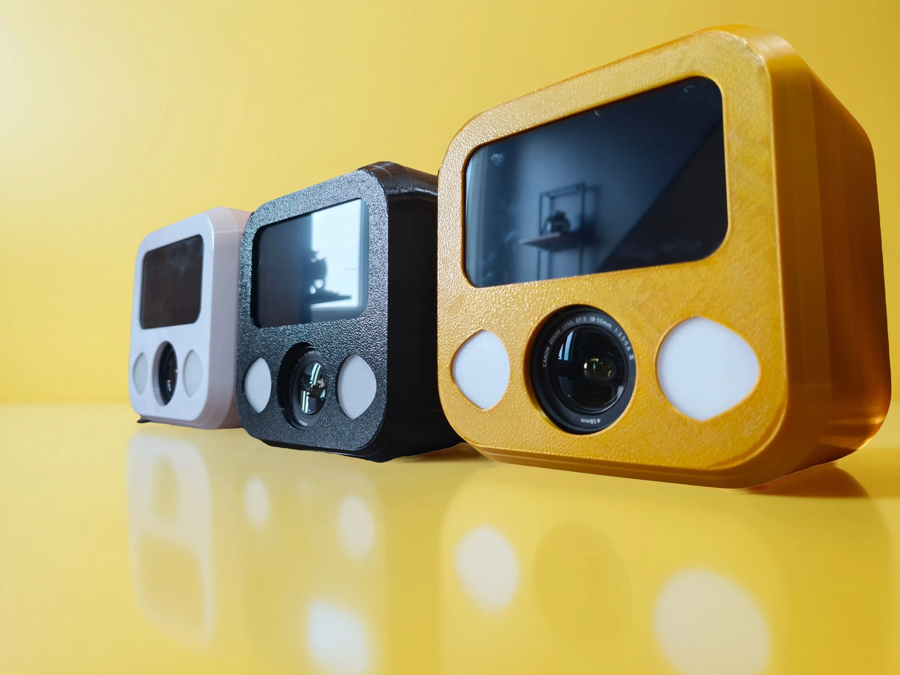
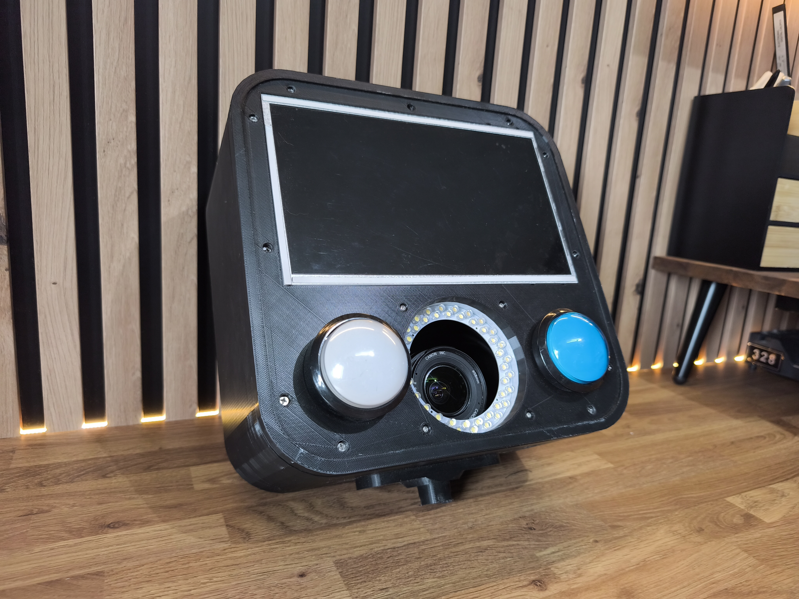
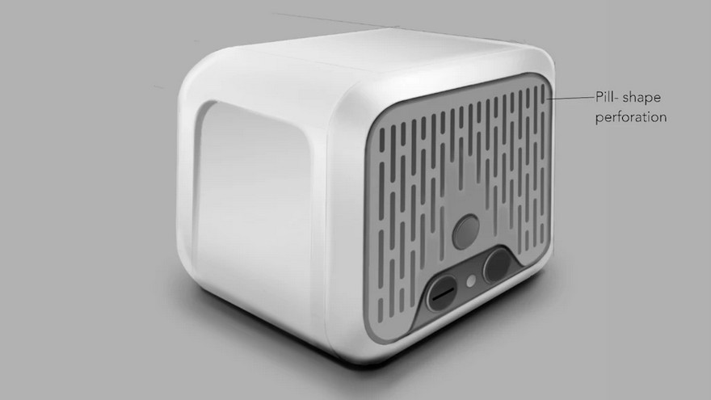
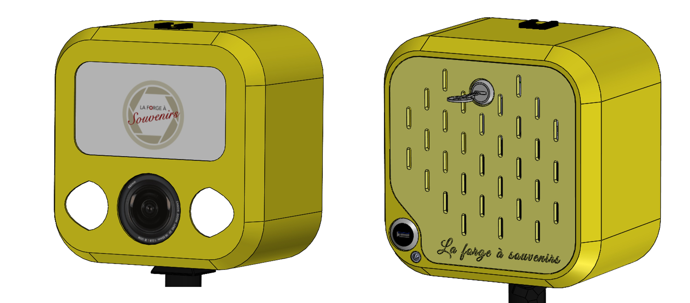
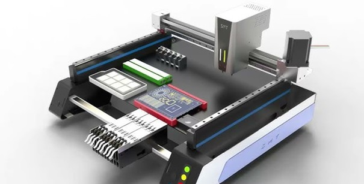
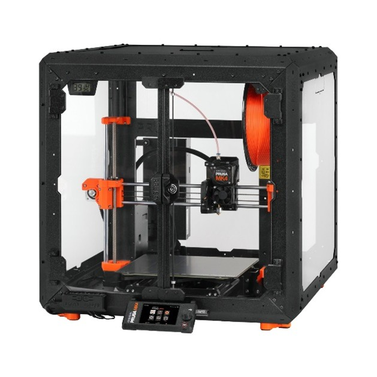
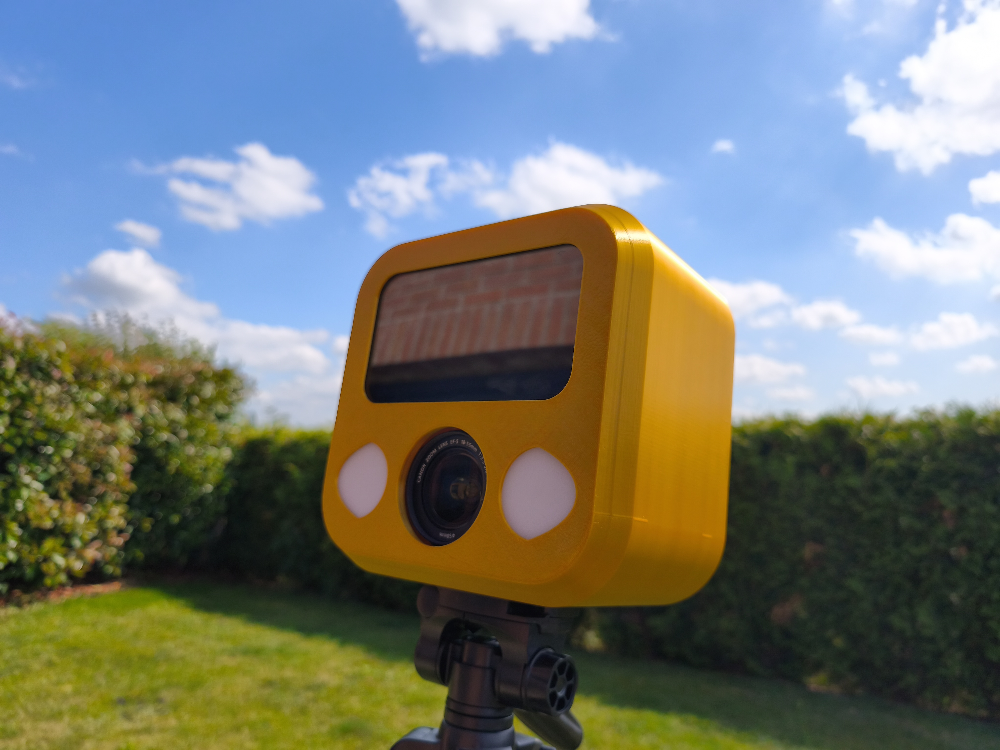
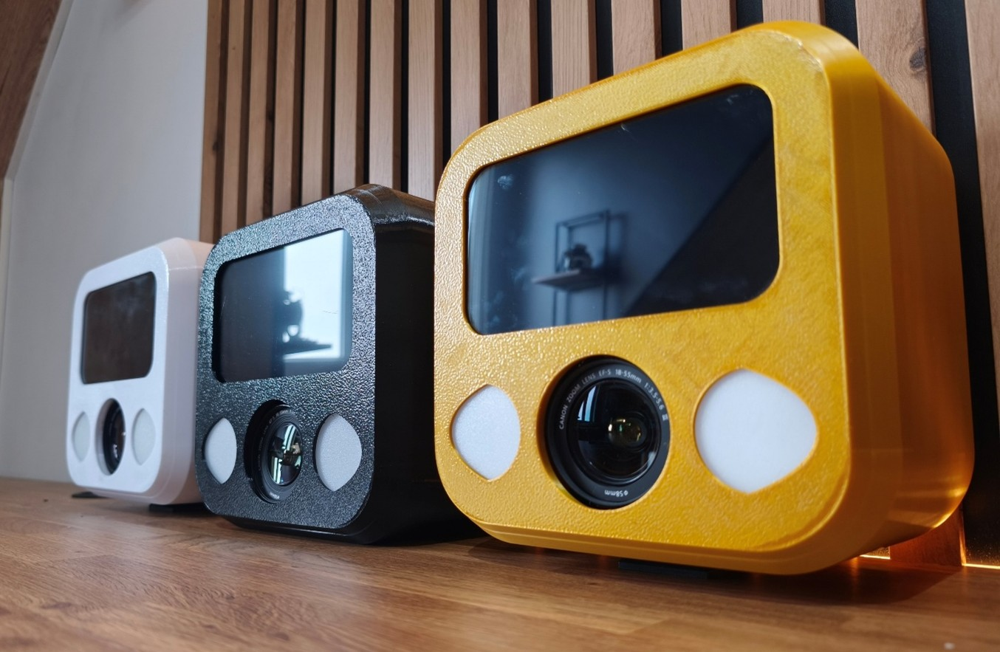

Photobooth pour La Forge à Souvenirs
Analyse du besoin
Objectif : concevoir une borne photo destinée aux mariages et événements, offrant une qualité d’image professionnelle, une grande autonomie et un encombrement réduit. Le tout devait permettre une location à un tarif cible de 150€, avec la possibilité d’expédier le système partout en France.
Pour rendre ce modèle économique viable, l’objectif était de produire plusieurs unités pour un coût de fabrication inférieur à 1000€ pièce, de préférence en France. Un véritable défi lorsqu’on connaît le prix d’équipements professionnels, souvent supérieur à 5000€.
Prototypage
Un Raspberry Pi, un appareil photo, une imprimante professionnelle, un peu de code et de mécanique : nous avons rapidement développé une première version fonctionnelle, une preuve de concept (POC).
Esthétiquement et en termes d’industrialisation, cette version était encore éloignée du produit final. À ce stade, l’assemblage nécessitait au moins 10 heures de travail, rendant la production locale coûteuse. Cela dit, ce prototype était idéal pour tester la robustesse et mener des essais sur le terrain.
Prévalidation
Après une phase d’évaluation interne et quelques ajustements, le prototype a été mis à l’épreuve lors d’événements réels — dont notre propre mariage. Un moment clé, où la borne devait absolument être à la hauteur… et ce fut un succès ! Le carnet de commandes de La Forge à Souvenirs était déjà plein alors que nous n’étions qu’en phase de test.
Ce qui séduisait ? Le tarif de location très accessible. Au-delà de l’enthousiasme, ces tests ont validé la solidité du concept et mis en lumière plusieurs axes d’amélioration : repositionnement des connectiques pour simplifier l’installation, remplacement des boutons par un écran tactile, etc.
Optimisation du design
Grâce aux retours utilisateurs, plusieurs itérations 3D ont été modélisées, intégrant les contraintes de production, d’assemblage et de transport. Le design devait rester simple, compact, et suffisamment résistant pour une utilisation intensive lors d’événements festifs.
Une fois le design retenu, nous avons modélisé la version finale en 3D en vue d’une industrialisation. En parallèle, nous avons développé une carte électronique sur mesure, centralisant toutes les fonctions (photo, flash, impression, écran), et entièrement réécrit le code pour répondre aux besoins définis.
Préindustrialisation
Étant donné la petite série envisagée, l’assemblage a été réalisé en interne : impression 3D en PETG, montage électronique, câblage, programmation.
Les cartes électroniques ont été produites en Allemagne par l’un de nos sous-traitants, tandis que l’assemblage des composants a été réalisé dans nos locaux grâce à notre machine pick and place, parfaitement adaptée aux petites séries.
Le boîtier, imprimé en 3D, a été choisi pour des raisons économiques : l’injection plastique nécessitant un moule coûteux n’était pas justifiée à ce stade. Le matériau retenu a été le PETG, idéal pour la solidité et l’exposition en extérieur.
Cette étape a permis de valider les plans d’assemblage, de calculer les coûts machines et de documenter chaque phase pour assurer la reproductibilité.
Validation finale
Dernière étape : la validation terrain de l’échantillon de production. Des tests de robustesse ont été menés, documentés, et les livrables validés par La Forge à Souvenirs. Il ne restait plus qu’à les mettre à l’épreuve en conditions réelles, auprès d’un panel de bêta-testeurs… principalement composé d’amis, de collègues et de proches.
Le produit ayant passé cette ultime étape avec succès, le feu vert a été donné pour la production : 6 bornes ont été réalisées selon ce modèle.
Conclusion
Ce projet n’est pas anodin : La Forge à Souvenirs est un partenaire historique d’Orbivia. Nous avons co-conçu ces bornes à selfie d’abord comme un défi technique, puis avec passion, jusqu’à franchir le cap de la production.
Aujourd’hui, les bornes sont toutes en service et ont déjà capturé plus de 10 000 sourires lors d’événements en France. Elles ont contribué à immortaliser des moments précieux de la vie.
Louer un Photobooth